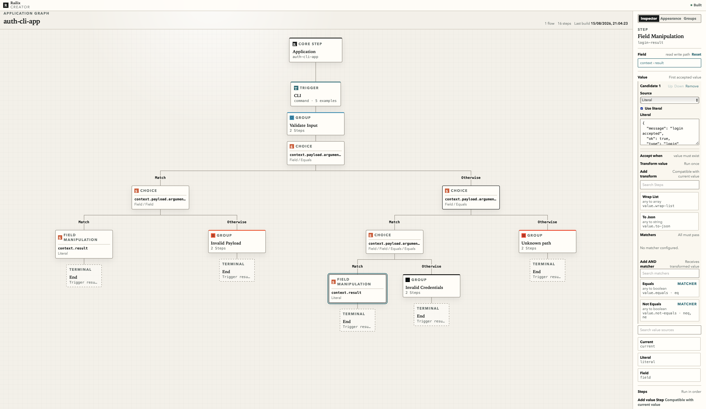

Behavior drifts
The product works one way in code, another way in diagrams and a third way in support notes.
Software without the platform trap
Railix lets teams design the behavior, verification, deployment, security and operations of a product in one visual system, then compile it into a fast standalone application they can run anywhere.

The hidden cost of software
The product works one way in code, another way in diagrams and a third way in support notes.
CI/CD, infrastructure, environment rules and deployment scripts become a second system to maintain.
Runbooks, edge cases, examples and production rituals stay in scattered tools and people’s heads.
Teams gain convenience, but their runtime and operating model become tied to someone else’s platform.
The Railix shift
Build the product from visual Flows and Steps that describe real behavior.
Examples become living specifications and the gate before anything ships.
Passing models compile into immutable standalone artifacts.
The same source of truth guides deployment, support, audit and production visibility.
One model. One artifact. Your infrastructure.
Railix is for teams that want software creation, verification, deployment and operations to come from the same place without giving up control of where the final application runs.
Explore production fits